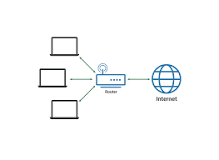
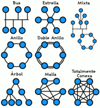

¿Qué es una LAN (red de área local)?
01 de Marzo 2024 por Jeferson Caleb Guerra Sorto
Una red de área local (LAN) es una red contenida dentro de una pequeña zona geográfica, normalmente dentro del mismo edificio. Las redes WiFi domésticas y las redes de pequeñas empresas son algunos ejemplos comunes de LAN.
A través de una red LAN pueden compartirse recursos entre varias computadoras y aparatos informáticos (como teléfonos celulares, tabletas, etc.), tales como periféricos (impresoras, proyectores, etc.), información almacenada en el servidor (o en los computadores conectados) e incluso puntos de acceso a la Internet, a pesar de hallarse en habitaciones o incluso pisos distintos.
Topologías físicas comunmente usadas
Una topología de bus usa solo un cable backbone que debe terminarse en ambos extremos. Todos los host se conectan directamente a este backbone. Su funcionamiento es simple y es muy fácil de instalar, pero es muy sensible a problemas de tráfico, y un fallo o una rotura en el cable interrumpe todas las transmisiones. Esto hace que se dificulte el mantenimiento de la red.
La topología de anillo conecta los nodos punto a punto, formando un anillo físico y consiste en conectar varios nodos a una red que tiene una serie de repetidores. Cuando un nodo transmite información a otro la información pasa por cada repetidor hasta llegar al nodo deseado. El problema principal de esta topología es que los repetidores son unidireccionales (siempre van en el mismo sentido). Después de pasar los datos enviados a otro nodo por dicho nodo, continua cirar de nuevo al nodo de origen, donde es eliminado. Esta topología no tiene problemas por la congestión de tráfico, pero si hay una rotura de un enlace, se produciría un fallo general en la red.
La topología en estrella conecta todos los nodos con un nodo central. El nodo central conecta directamente con los nodos, enviándoles la información del nodo de origen, constituyendo una red punto a punto. Si falla un nodo, la red sigue funcionando, excepto si falla el nodo central, que las transmisiones quedan interrumpidas.
La topología mixta es aquella en la que se aplica una mezcla entre alguna de las otras topologías: bus, estrella o anillo. Principalmente las podemos encontrar dos topologías mixtas: Estrella-Bus y Estrella-Anillo. Los cables más utilizados son el cable de par trenzado, el cable coaxial y la fibra óptica.
Componentes
Estación de trabajo: las computadoras que toman el papel de estaciones de trabajo aprovechan o tienen a su disposición los recursos que ofrece la red así como los servicios que proporcionan los Servidores a los cuales pueden acceder.
Gateways o pasarelas: es un hardware y software que permite las comunicaciones entre la red local y grandes computadoras (mainframes). El gateway adapta los protocolos de comunicación del mainframe (X25, SNA, etcétera) a los de la red, y viceversa.
Puente de red|Bridges o puentes de red: es un hardware y software que permite que se conecten dos redes locales entre sí. Un puente interno es el que se instala en un servidor de la red, y un puente externo es el que se hace sobre una estación de trabajo de la misma red. Los puentes también pueden ser locales o remotos. Los puentes locales son los que conectan a redes de un mismo edificio, usando tanto conexiones internas como externas. Los puentes remotos conectan redes distintas entre sí, llevando a cabo la conexión a través de redes públicas, como la red telefónica, RDSI o red de conmutación de paquetes.
Tarjeta de red: también se denominan NIC (Network Interface Card). Básicamente realiza la función de intermediario entre la computadora y la red de comunicación. En ella se encuentran grabados los protocolos de comunicación de la red. La comunicación con la computadora se realiza normalmente a través de las ranuras de expansión que este dispone, ya sea ISA, PCI o PCMCIA. Aunque algunos equipos disponen de este adaptador integrado directamente en la placa base.
El medio: constituido por el cableado y los conectores que enlazan los componentes de la red. Los medios físicos más utilizados son el cable de par trenzado, cable coaxial y la fibra óptica (cada vez en más uso esta última).
Concentradores de cableado: una LAN en bus usa solamente tarjetas de red en las estaciones y cableado coaxial para interconectarlas, además de los conectores, sin embargo este método complica el mantenimiento de la red ya que si falla alguna conexión toda la red deja de funcionar. Para impedir estos problemas las redes de área local usan concentradores de cableado para realizar las conexiones de las estaciones, en vez de distribuir las conexiones el concentrador las centraliza en un único dispositivo manteniendo indicadores luminosos de su estado e impidiendo que una de ellas pueda hacer fallar toda la red.
Tipos de Concentradores
Concentradores pasivos: actúan como un simple concentrador cuya función principal consiste en interconectar toda la red.
Concentradores activos: además de su función básica de concentrador también amplifican y regeneran las señales recibidas antes de ser enviadas y ejecutadas.